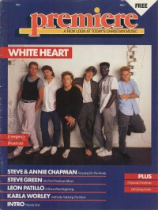

Whiteheart
|  1987 Premiere |
 October 1993 The Lighthouse |
Media coverage
- Apr 1985 in Contemporary Christian Magazine "No Pain, No Gain", by Steve Rabey
- Sep 1986 in Contemporary Christian Magazine "Broken Strings", by John W. Styll
- Jun 1987 in CCM "In Concert: L.A. Baptist High School Gym, Sepulveda, CA", by Margie Altamirano
- 1987 in Premiere "Whiteheart"
- Jan 1988 in CCM "Toys in the Band: Whiteheart"
- Jan 1988 in Notebored "Whiteheart"
- Mar 1988 in CCM "Notebook: Going About The Father's Business", by Bruce A. Brown
- 1988 in Premiere "Whiteheart"
- May 1988 in CCM "In Concert: Shoals Theatre, Florence, AL", by Randall Jones
- 1988 in Premiere "Notes: Heart Attack Tour"
- Fall 1988 in Harvest Rock Syndicate "New, Improved Whiteheart", by Mary Kay Fincher
- Jan 1989 in CCM "In Concert: Embassy Theatre, Ft. Wayne, Indiana", by Jenny McGuire
- Jul 1989 in CCM "The Freedom To Play Together, Pray Together, and Stay Together", by Thom Granger
- Sum 1989 in Harvest Rock Syndicate "Concert Review: 1989 Heart Attack Tour", by Mary Kay Fincher
- Aug 1989 in CCM "Because of Jesus", by Brian Quincy Newcomb
- Jul 1990 in Campus Life "Just Plain Rick"
- Jul 1990 in Campus Life "Eighth Wonder"
- Jul 1990 in CCM "In Concert: Agape Festival, Greenville, IL", by Chris Well
- Feb 1991 in CCM "Pounding It out in the Power House", by Brian Quincy Newcomb
- Mar 1991 in Harvest Rock Syndicate "Bowling For Miracles", by Chris Well
- Jul 1992 in Campus Life "Expressions: Whiteheart", by Jim Long, Chris Lutes
- Aug 1992 in CCM "Always 'In It'", by Bruce A. Brown
- Dec 1992 in CCM "In Concert: Johnson Theatre, Oral Roberts University, Tulsa, OK", by Chad Bonham
- Sep 1993 in Heaven's Metal "A Walk on The Lighter Side", by Doug Van Pelt
- Fall 1993 in Notebored "Whiteheart"
- Oct 1993 in The Lighthouse "Whiteheart", by Beth Blinn
- Nov 1993 in CCM "Climbing To The Highlands", by Chris Well
- 22 Nov 1993 in Christianity Today "Has Christian Rock Lost It's Soul?", by Tim Stafford
- Feb 1994 in CCM "Five Christian Music Couples on Getting Together and Staying Together", by Randy S Rocker
- Jun 1994 in Charisma & Christian Life "People & Events: Whiteheart's Rock Reaches Teens", by Marsha Gallardo
- Jul 1994 in Heaven's Metal "Metal Tracks: Whiteheart in South Africa"
- Aug 1994 in CCM "In Concert: Seattle Pacific University", by Perucci Ferraiuolo
- Nov 1995 in CCM "Let Me Call You Whiteheart", by Bruce A. Brown
- Dec 1995 in HM "Inside White Heart", by Brian Vincent McGovern
- Jul 1996 in CCM "In Concert: Saltbox Tour, Six Flags Magic Mountain, Valencia, CA", by Dan MacIntosh
- Nov 1997 in CCM "The Whiteheart Redemption", by Mike Parker
- 2000 in CCM Brasil "Quando o Coração se Quebra", by Melissa Riddle
- May 2003 in CCM "Last Glance: Time Machine: Whiteheart", by Aaron King
- Aug 2003 in CCM "Fanfare: Tenbrink Remembers: White Hot Whiteheart", by Michael TenBrink
- Dec 2005 in CCM "Hall of Fame: Whiteheart", by John J. Thompson
Albums & reviews:
1982: White Heart
- Mar 1983 in Contemporary Christian Music
- May 1983 in Campus Life, by Jim Long
- Sep 1983 in Christian Herald, by Ron R. Lee
1984: Vital Signs
- 1984 in Cornerstone, by Jon Trott
- May 1984 in Campus Life, by Jim Long
- Jun 1984 in Contemporary Christian Magazine, by Steve Ledesma
- Jun 1984 in Charisma, by Richard Nakamoto
1985: Hotline
- May 1985 in MusicLine, by Brian Quincy Newcomb
- May 1985 in Contemporary Christian Magazine, by Bob Darden
1986: Live at Six Flags
- Jul 1986 in MusicLine
- Oct 1986 in Campus Life, by Jim Long
- Oct 1986 in Contemporary Christian Magazine, by Bruce A. Brown
1986: Don't Wait for the Movie
- Sep 1986 in MusicLine
- Oct 1986 in Charisma, by Steve Lawson
- Oct 1986 in Contemporary Christian Magazine, by Bruce A. Brown
- 1986 in Cornerstone
1987: Emergency Broadcast
- Dec 1987 in CCM, by Steve Rabey
- Win 1987 in Harvest Rock Syndicate, by T. L. Faris
- Mar 1988 in Charisma & Christian Life, by Steve Lawson
- Mar 1988 in Group, by David Michael Ed
- Apr 1988 in Campus Life, by Jim Long
1987: Greatest Hits
1989: Freedom
- 1989 in Cornerstone, by Jon Trott
- Jul 1989 in Campus Life, by Jim Long
- Jul 1989 in CCM, by Bruce A. Brown
- Aug 1989 in Charisma & Christian Life, by Steve Lawson
- Win 1990 in YouthWorker, by Mike Atkinson
1990: Souvenirs
- Feb 1991 in Heaven's Metal, by Lynn Miller
- Mar 1991 in Charisma & Christian Life, by George Papp
1990: Powerhouse
- Jan 1991 in Harvest Rock Syndicate, by Brian Quincy Newcomb
- Feb 1991 in CCM, by Doug Van Pelt
- Mar 1991 in Campus Life, by Jim Long
1991: Live at the Powerhouse [video]
1992: Tales of Wonder
- May 1992 in Syndicate, by Dan MacIntosh
- Jun 1992 in CCM, by Brian Quincy Newcomb
- Aug 1992 in Charisma & Christian Life, by Shawn Hedegard
- Spr 1993 in YouthWorker, by Steve Rabey
1993: Highlands
- Nov 1993 in The Lighthouse, by Beth Blinn
- Nov 1993 in CCM, by Bruce A. Brown
- Jan 1994 in Campus Life
- Sum 1994 in YouthWorker, by Steve Rabey
1993: Quiet Storm - The Ballads
1995: Inside
- Oct 1995 in CCM, by Michael Ciani
- Oct 1995 in Syndicate, by Steven Dale
- Dec 1995 in HM, by Doug Van Pelt
- Jan 1996 in Aspire
1996: The Early Years
1997: Redemption
- Nov 1997 in CCM, by Scott Thunder
- Nov 1997 in Charisma & Christian Life, by Angela Warner
- Jan 1998 in YouthWorker, by Greg A. Shore
- Jan 1998 in HM, by Brian Vincent McGovern
- Mar 1998 in New Man
2000: Millennium Archives
2000: Hits From The Heart
Award Summary (Nominations / Wins)
Dove Awards- 1984 Dove Awards
- Contemporary Album: White Heart
- Group of the Year
- Recorded Music Packaging: Don't Wait for the Movie
- Rock Album: Freedom
- Group of the Year
- Long Form Video: Live at the Powerhouse [video]
- Rock Album: Powerhouse
- Rock Recorded Song: "Power House"
- Group of the Year
- Rock Album: Tales of Wonder
- Rock Recorded Song: "His Heart was Always in It"
- Recorded Music Packaging: Highlands
- Rock Album: Highlands
- Rock Album: Inside
- Rock Recorded Song: "Inside"
- Rock Album: Redemption
- Rock Recorded Song: "Jesus"
- 1983 Grammy Awards
- Best Gospel Performance by a Duo or Group: White Heart
- Best Rock/Contemporary Gospel Album: Tales of Wonder
Books about Whiteheart
- "The Road" in Soul2Soul (Christopher L Coppernoll, 1998).
- "White Heart" in The Encyclopedia of Contemporary Christian Music (Mark Allan Powell, 2002).
- "Whiteheart" in The Billboard Guide to Contemporary Christian Music (Barry Alfonso, 2002).
© 2011 CMnexus. Last updated August 2025. Contact: editor -AT- cmnexus -DØT- org